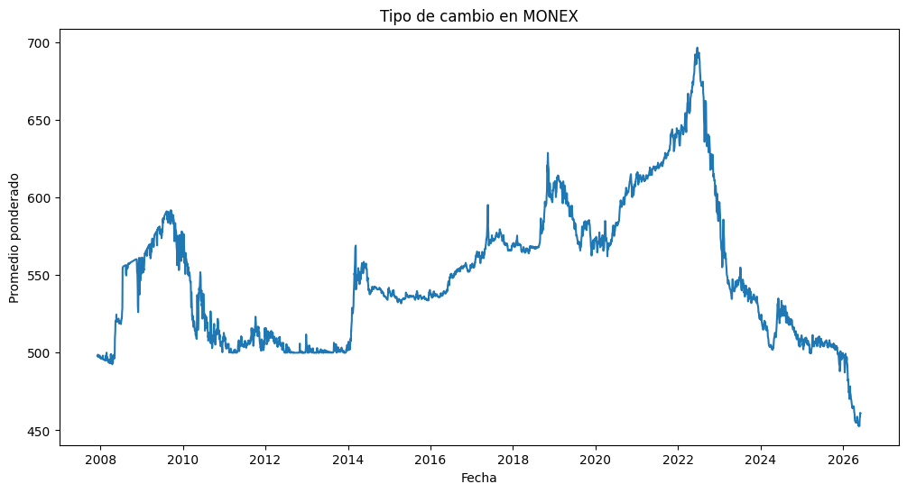
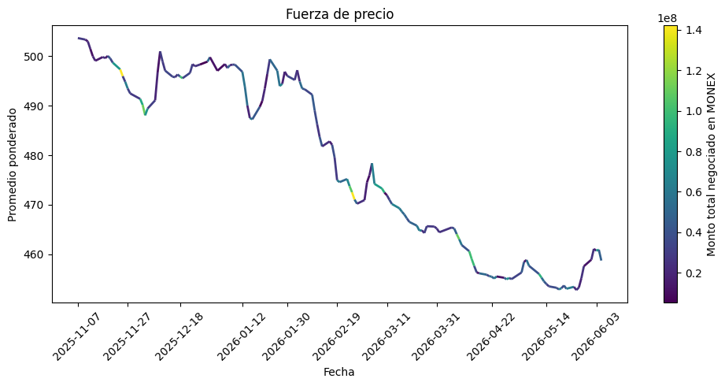

El color de la línea representa el monto total negociado en MONEX. Los colores más cálidos indican mayores montos transados. En la actual tendencia a la baja del precio, las caídas de precio tienden a ocurrir con altos montos transados mientras que las subidas tienden a ocurrir con bajos montos.